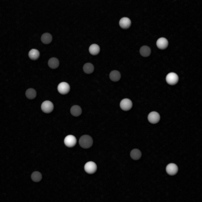
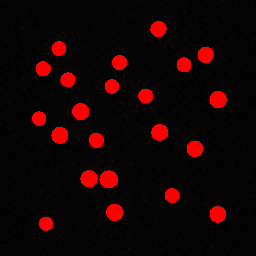
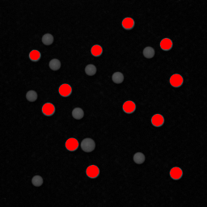

|
IDS peak ICV v1.5.0
|
|
IDS peak ICV v1.5.0
|
Image segmentation is the process of partitioning an image into multiple regions to locate objects of interest in images as a basic step of image analysis. A segmentation is typically carried out in several stages:
Thresholding separates pixels into two categories (foreground and background) based on their gray value. The simplest thresholding method uses a fixed gray value range. A pixel value is classified as foreground if it belongs to the range. For example, if we assume dark objects on a bright background, we can detect the pixels by applying an interval between 0 and a maximum value (which is smaller than the background intensity). See: Apply thresholding to the image
The result of the threshold is exactly one region. Since usually several objects are visible in the image and a separate region (segment) is desirable for each object, the set of connected pixels (components) has to be determined. See: Determine connected components
To remove regions you are not interested in, you can select regions with a certain feature (e.g. area). See: Select regions with a certain feature
Thresholding is most effective in scenarios where the illumination conditions remain consistent throughout the image. It performs well when the overall lighting remains stable, and there is minimal variation in brightness levels across the image. Additionally, external light sources, such as sunlight or artificial lighting, should have minimal impact on the image. This ensures that the objects of interest are clearly distinguishable from the background, making it easier to define suitable thresholds.
The Thresholding technique is applicable to single-channel images with various pixel formats. The supported formats are listed in the reference of the function.
| Source Image | Result for interval [25, 255] | Result for interval [90, 255] |
|---|---|---|
 |  |  |
To process a segmentation using one of the provided interfaces, follow the steps below:
The following library functions return all pixel positions with gray values within the specified interval. The result is given in the form of one Region.
The result of the threshold is exactly one region. Since usually several objects are visible in the image and a separate region (segment) is desirable for each object, the set of connected pixels, the connected components, have to be determined. Use the following functions to determine connected components.
In a final step, select regions with a certain feature (e.g. area) in order to remove regions you are not interested in. Use the following functions, and replace <feature> with the feature you want to use: